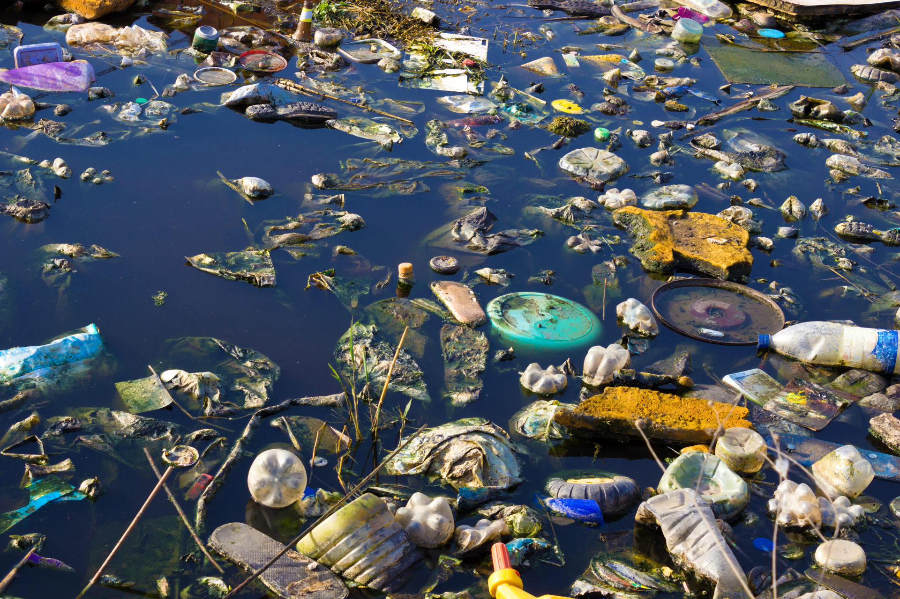

Separar los residuos desde el lugar donde se producen ayuda a recuperar materiales y reduce la cantidad de basura que llega a los rellenos sanitarios.
Los residuos aprovechables, como papel, cartón, plástico, vidrio y metales, deben estar limpios y secos antes de entregarlos para reciclaje. Los restos de comida y otros residuos orgánicos pueden aprovecharse mediante el compostaje.

Reducir el consumo de productos desechables evita generar residuos innecesarios. Reutilizar envases y reparar objetos alarga su vida útil, mientras que reciclar permite que ciertos materiales vuelvan a utilizarse como materia prima.
Hogares, comercios, instituciones y autoridades pueden contribuir con una separación adecuada y una recolección organizada. Los hábitos cotidianos, junto con una buena gestión de residuos, ayudan a proteger el suelo, el agua y la salud de las comunidades.